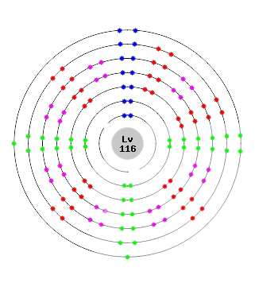

A família dos Calcogênios
Os calcogênios são elementos químicos localizados na família VI A da Tabela Periódica e possuem seis elétrons na camada de valência. Denominamos de calcogênios todos os elementos químicos pertencentes à família VI A ou grupo 16 da Tabela Periódica.
Oxigênio
O Oxigênio é um elemento químico que pertence ao segundo período da família
VIA (calcogênios) da Tabela Periódica. Trata-se do elemento mais abundante na
superfície terrestre.
Todos sabemos da importância vital desse elemento, já que
ele forma o gás oxigênio (gás presente no ar atmosférico que é fundamental para
a sobrevivência de diversos seres).
História
O chinês Mao-Khoa, no século VIII, e Leonardo da Vinci, no século XV,
chegaram à conclusão de que o ar não era um elemento. Para Mao-Khoa, o ar era
composto por duas substâncias: ar completo e ar incompleto. Já da Vinci percebeu
que havia uma relação entre o fenômeno da combustão e o ar que respiramos.
Em 1771 e 1774, dois cientistas realizaram experimentos diferentes, mas
alcançaram o mesmo resultado. Em 1771, Scheele produziu gás oxigênio a partir
do aquecimento individual de substâncias diferentes, como nitrato de potássio e o
óxido de mercúrio. Já em 1774, Priestley aqueceu o óxido de mercúrio II (HgO) e
produziu o gás oxigênio (O2).
Em 1777, Lavoisier forneceu o nome do elemento oxigênio depois de verificar que
esse elemento químico fazia parte da composição (as moléculas apresnetam
átomos de oxigênio) de diversos ácidos inorgânicos.
Características
O enxofre é um elemento amarelo pálido a amarelo-esverdeado encontrado principalmente em estado sólido. Possui um odor característico de "cheiro de ovo podre". É não metálico, inerte em sua forma elementar, mas reage com outros elementos para formar vários compostos. Pode ser encontrado na natureza em depósitos minerais e fontes naturais.
História do enxofre:
O enxofre é conhecido desde tempos antigos. Os antigos egípcios e mesopotâmicos já utilizavam o enxofre em aplicações medicinais e na produção de materiais, como a fabricação de cerâmica. Além disso, na Grécia Antiga, o enxofre era associado a divindades e considerado um elemento sagrado. Foi usado em rituais religiosos e como ingrediente em medicamentos.
Já durante a Idade Média, o enxofre foi utilizado na alquimia, uma antiga prática que visava transformar metais em ouro.
Durante a Revolução Industrial, sua demanda aumentou devido ao uso na produção de ácido sulfúrico. E por fim, no século XIX e XX, foi amplamente utilizado na indústria química, medicina e como conservante de alimentos.
Atualmente, é essencial em várias áreas, como agricultura e produção de energia.
Como é usado o enxofre:
O enxofre é um elemento químico comum com várias funções e possui várias aplicações. Aqui estão algumas das principais coisas que o enxofre faz:
1-O enxofre é usado na produção de ácido sulfúrico, um dos produtos químicos industriais mais importantes. O ácido sulfúrico é muito utilizado na fabricação de fertilizantes, na produção de produtos químicos, na refinação de petróleo, etc.
2-O enxofre é usado como conservante de alimentos, especialmente em frutas secas. Ele ajuda a inibir o crescimento de bactérias e fungos.
3-O enxofre é usado como conservante de alimentos, especialmente em frutas secas. Ele ajuda a inibir o crescimento de bactérias e fungos.
4-O enxofre é usado como fertilizante agrícola. O enxofre elemental ou compostos de enxofre são aplicados no solo para corrigir deficiências desse elemento e melhorar a qualidade do solo.
Selênio
O selênio (Se) é um dos 118 elementos químicos atualmente presentes na tabela periódica, pertence a família dos calcogênios, e se encontra no grupo 16 possuindo número atômico 34 e massa atômica de 78 u , suas características químicas e físicas , são muitos semelhantes ás do enxofre e do telúrio.
Características
Aqui vão algumas características do Selênio:
• O selênio é simbolizado por Se , tem número atômico 34 , pertence à família 16 da Tabela Periódica e faz parte dos elementos representativos .
• É classificado como não metal e possui propriedades similares ao enxofre e ao telúrio.
• Possui três formas alotrópicas : vermelha , negra e cinza. Está possui propriedades semicondutoras e é usado em painéis solares .
• Participa da composição de alguns tipos de vidros e está presente em fotocopiadoras e na área da fotografia, atuando como tonalizante de imagens em preto e branco.
• É um dos nutrientes essenciais à saúde, desempenhando funções de equilíbrio da glândula tireóide, fortalecimento do sistema imune e ação antioxidante.
• Pode ser encontrado em alimentos de origem animal , como carnes, vísceras, fruto do mar e ovos e, também, em fontes vegetais , como no feijão preto , na lentilha e, principalmente, na castanha-do-pará .
• Altas dosagens dele no organismo podem ser tóxicas e manifestar efeitos carcinogênicos e teratogênicos.
• É um elemento raro na natureza, sendo encontrado, geralmente, em associação com minerais que contenha enxofre.
• Sua forma economicamente viável é por meio de processos industriais em que ele seja um subproduto.
Características
O telúrio é um elemento com massa atômica de 127,6 e número atômico de 52.
Sendo um ametal, o telúrio possui dois alótropos: o cristalino e o amorfo. Além disso, esse elemento também é um semicondutor, e sua condutividade varia conforme a organização atômica da amostra. Ele reage quimicamente com a maioria dos elementos existentes, e os teluretos são os compostos mais estáveis.
Por não ser tão eletronegativo como o oxigênio e o enxofre, há a existência de compostos do telúrio com estados de oxidação positivos. Possui coloração branca e brilho metalizado.
aparência metálica prateada, o telúrio foi descoberto por volta de 1782, pelo mineralogista austro-húngaro Franz Joseph Müller von Reichenstein, que trabalhava em uma mina na Transilvânia. O minério foi inicialmente confundido com o bismuto.
Onde é usado?
Um dos principais usos do telúrio é como aditivo de ligas metálicas, principalmente nas ligas de cobre e aço inoxidável. A função do telúrio é aumentar a ductilidade, a dureza e a resistência à tração das ligas metálicas. No aço inox e no cobre, o telúrio é capaz de melhorar a usinabilidade.
O telúrio é um elemento relativamente raro, encontrado em associação com outros elementos, em minerais como a calaverita e a silvanita.
Também é usado na vulcanização de pneus e na fabricação de semicondutores.
Características
É um metal calcogênico cinza-prateado, de massa atômica 2010 (símbolo 210Po), número 84 na tabela periódica dos elementos de Mendeleev e que se sublima (passa do estado sólido ao gasoso) com rapidez, a partir dos 50 graus centígrados.
Sua meia-vida (prazo no qual perde a metade de sua atividade) é de 138 dias.
Solúvel, muito tóxico em doses ínfimas por inalação ou ingestão, o polônio está presente na fumaça dos cigarros. Por si só, pode provocar câncer por inalação nos animais de laboratório.
História
O polônio foi o primeiro elemento descoberto, em 1898, pela física francesa de origem polonesa Marie Sklodowska-Curie, em colaboração com seu marido, Pierre Curie. Em homenagem ao seu país natal, deu a este elemento o nome de polônio.
Após a descoberta de 'raios urânicos' por Antoine Becquerel, Marie Curie realizava pesquisas sobre a radioatividade de pechblenda procedente das minas de prata da Boêmia.
Usos do Polônio
O polônio é utilizado normalmente como fonte de raios alfa para a pesquisa e a medicina, mas também, entre outras coisas, como fonte de calor nos veículos espaciais.
Também pode ser utilizado como fonte de nêutrons; principalmente em liga com o bismuto, em medidores de espessura de materiais e em escovas antiestáticas
Características

O livermório é um elemento químico sintético, símbolo Lv, número atômico 116 (116 prótons e 116 elétrons), com provável massa atómica de [292] u.
É obtido bombardeando átomos de Cúrio e Cálcio. O isótopo mais estável tem meia-vida de cerca de 53 milisegundos.
História
Em 1999, pesquisadores do Laboratório Nacional de Lawrence Livermore anunciaram o descobrimento do elemento 116, em um artigo publicado na revista norte-americana Physical Review Letters, explicando o decaimento α de um átomo de maior número atômico.
E em junho de 2000, do Instituto Conjunto de Pesquisa Nuclear, na cidade de Dubna (Rússia), realizaram estudos que descreviam o decaimento-α do isótopo 292Fl que era produto da reação de fusão um núcleo de 248Cm quando bombardeados com íons de 48 Ca acelerado por um cíclotron, obtendo como subproduto 4 nêutrons
Porém, em ambas as ocasiões, não conseguiram reproduzir o elemento novamente em laboratório.
Contudo, em outubro de 2006 foi anunciado que por três vezes, bombardeando átomos de califórnio-249 com íons de cálcio-48 produziram Oganesson, que então decaiu para livermório em milissegundos, confirmado isso, a síntese do elemento 116 havia então sido demonstrada conclusivamente